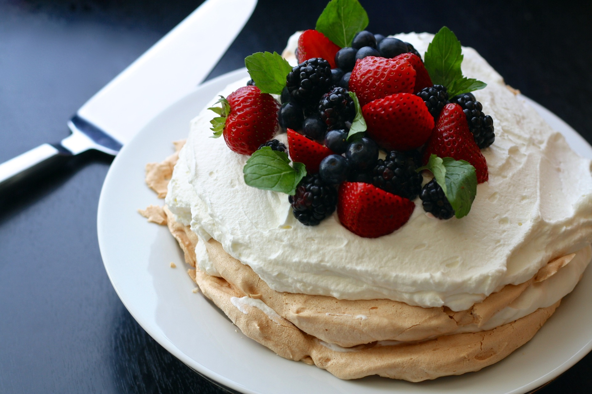

Ingredients: |
Recipe:
Did you know?A top tip (but not traditional) is to turn the
pavlova upside down before decorating with cream and fruit because the
bottom is less crispy than the top after cooking and unless you serve
it immediately after decorating the "top" absorbs moisture from the
cream. |
|
|
|||
|
Lanarn: 25 Feb 2013 @ 17:16, Rating 4/5 ozmax25: 26 Jan 2013 @ 14:25, Rating 5/5 Pavzilla: 01 Dec 2012 @ 21:45, Rating 2/5 |
|||